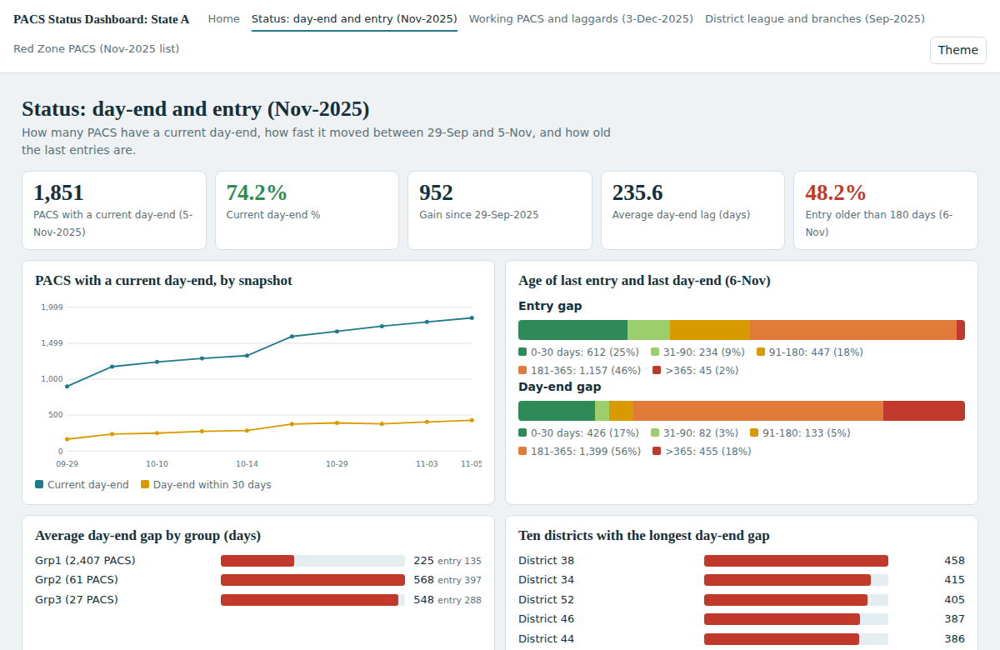
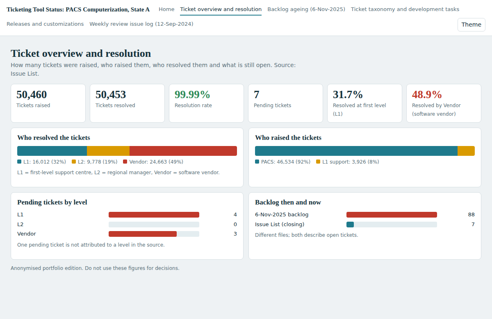
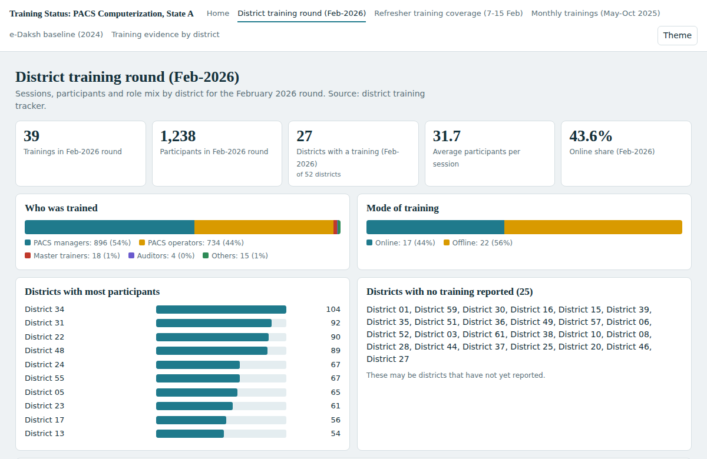
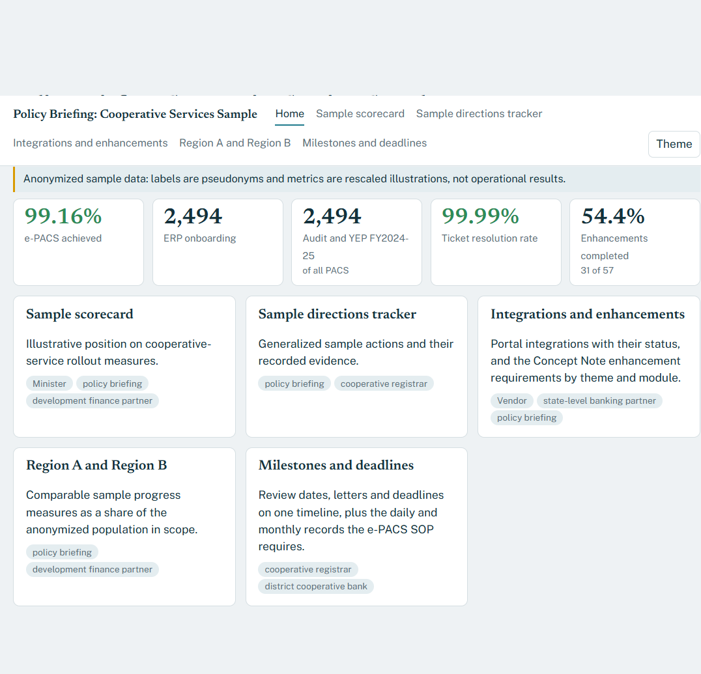
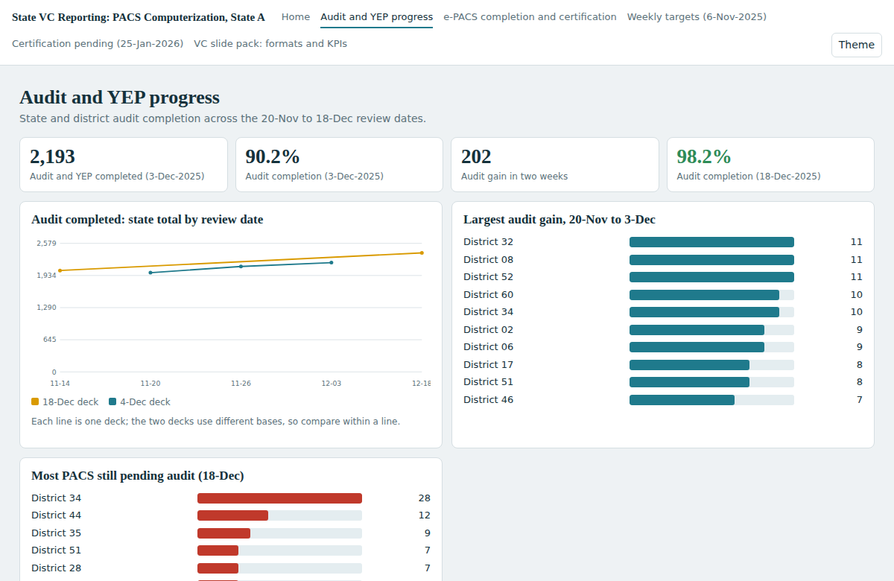

Five anonymized reporting demonstrations with sample dashboards, Python build scripts, and Power BI kits.
Anonymized sample data: labels are pseudonyms and metrics are rescaled illustrations, not operational results.

Operational status of every PACS: day-end currency, age of the last entry, working and laggard PACS, district league and branch drill-down, Red Zone list.
Collector, cooperative registrar, district cooperative bank4 pages10 KPIs
Support tickets by level, backlog ageing, development tasks, release deployment and customization pipeline.
state-level banking partner, vendor, SI5 pages10 KPIs
Training reach by district, refresher-plan coverage, monthly sessions and a baseline round, with a documentation check.
cooperative registrar, development finance partner, state-level banking partner5 pages9 KPIs
An anonymized sample briefing: scorecard, generalized actions, integrations, comparison, and milestone timeline.
policy team, development finance partner5 pages9 KPIs
The weekly video-conference review: audit and e-PACS progress, dated targets, weekly targets and certification pending.
cooperative registrar, development finance partner, audit dept5 pages9 KPIs